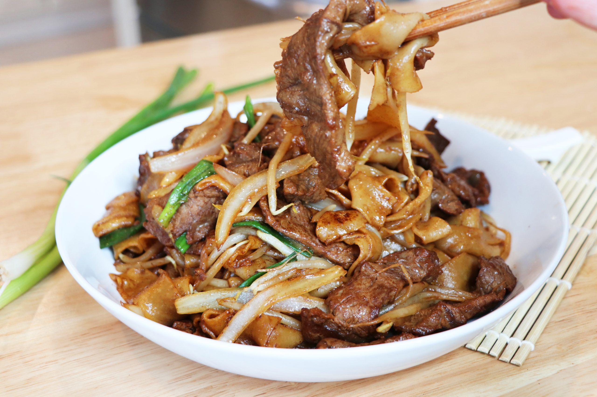

Back to Homepage
Beef Chow Ho Fun

Description
Full of flavour with a very springy texture. Its flavour can be further enhanced with Soy Sauce and MSG. Finally topped off with spring onions and potentially other ingredients left-over from previous nights. A perfect clean-up dish to clear the fridge whilst providing immense flavour.
Ingredients
- Beef
- Flat-rice noodles
- Spring Onions
- Light Soy Sauce
- Dark Soy Sauce
- Beansprouts
- Cooking oil - Vegetable, Sunflower or Coconut oil is okay
- Sesame Oil
- Optional - MSG for enhanced flavour
- Optional - Other left-over ingredients if looking to clean-up fridge. Examples can include onions
Steps
- Combine the beef and marinade ingredients and marinate for about 1 hour.
- Some fresh rice noodles come as large sheets, while others are already cut. If you have the sheets, slice the rice noodles so they're about 1 inch wide. If the noodles are very stiff and stuck together, bring a wok full of water to a boil, and add the noodles. Blanch them for 30 seconds to loosen. Transfer to an ice bath and drain thoroughly.
- Heat your wok over high heat until smoking, and add 1 1/2 tablespoons oil to coat the wok. Add the beef and sear until browned. As long as your wok is hot enough, the meat shouldn't stick. Set aside. Add 1 1/2 tablespoons more vegetable oil to the wok. Add the ginger to infuse the oil with its rich flavor for about 15 seconds. Add the scallions.
- Spread the noodles evenly in the wok and stir-fry on high for about 15 seconds. Add the Shaoxing wine around the perimeter of the wok.
- Next, add the sesame oil, soy sauces, pinch of sugar and the seared beef. Stir-fry, making sure your metal wok spatula scrapes the bottom of the wok. Lift the noodles in an upward motion to mix well and coat them evenly with the sauce.
- Add a bit of salt and white pepper to taste (taste the noodles before adding salt). Add the bean sprouts and stir-fry until they are just tender. Serve!
Tips
A useful tip is to freeze the beef before slicing, until it's firm but not solid. This makes slicing the beef much easier!
Important: Heat should remain as high as possible at all times when cooking this dish.